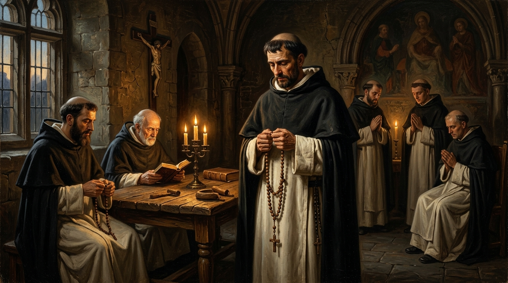
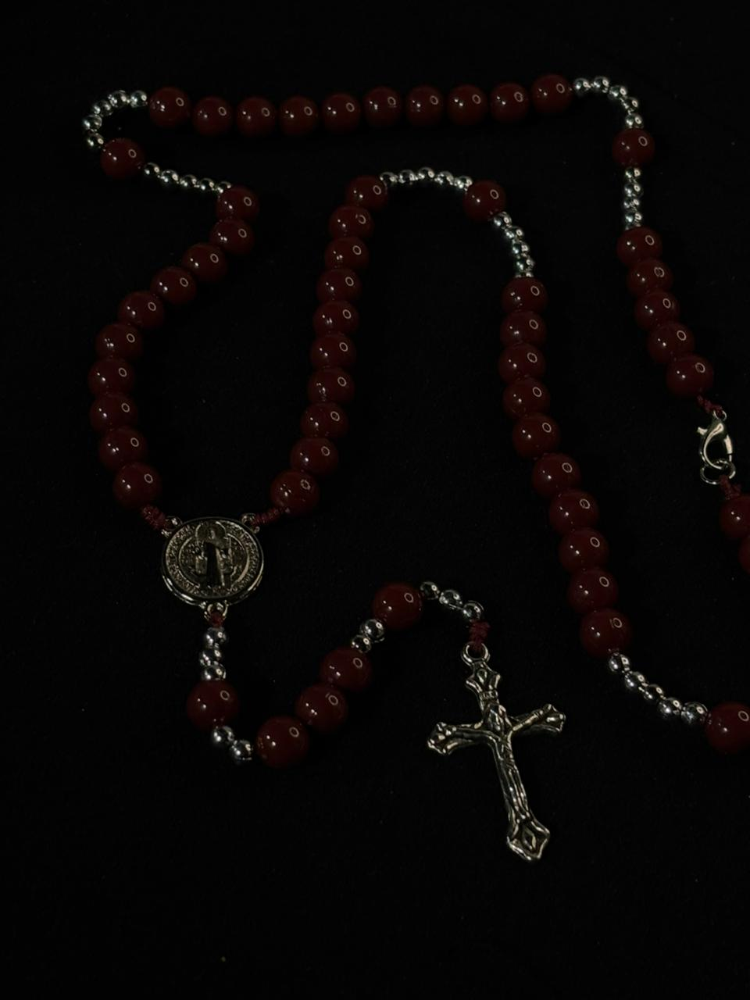

Título de la Oración
Instrucción o meditación
Texto de la oración...
Instrucción o meditación
El rosario cristiano nació en la Edad Media para que los fieles que no sabían latín pudieran unirse a la oración monástica. En lugar de los 150 salmos bíblicos, el pueblo rezaba 150 Padrenuestros y Avemarías guiándose con cuentas anudadas, comparando cada oración con una rosa ofrecida a la Virgen María.
Difundido por Santo Domingo de Guzmán y la orden dominica, en el siglo XV se ordenó en decenas para meditar pasajes de los Evangelios. El papa Pío V fijó formalmente su estructura en 1569 con quince misterios, marco que permaneció intacto hasta 2002, cuando Juan Pablo II añadió los Misterios Luminosos para completar los veinte que se rezan hoy.

